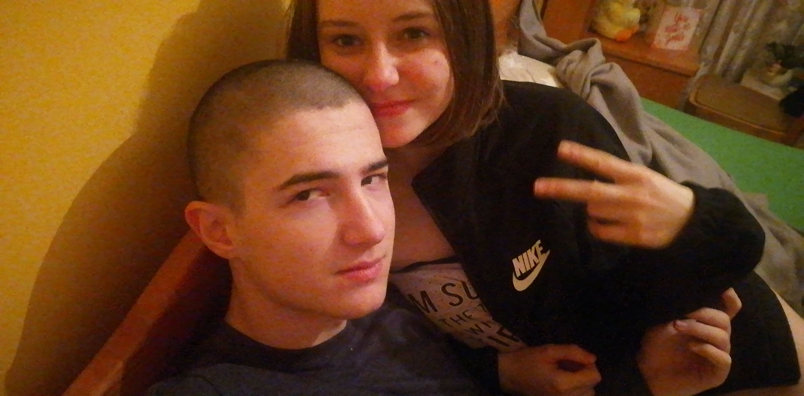
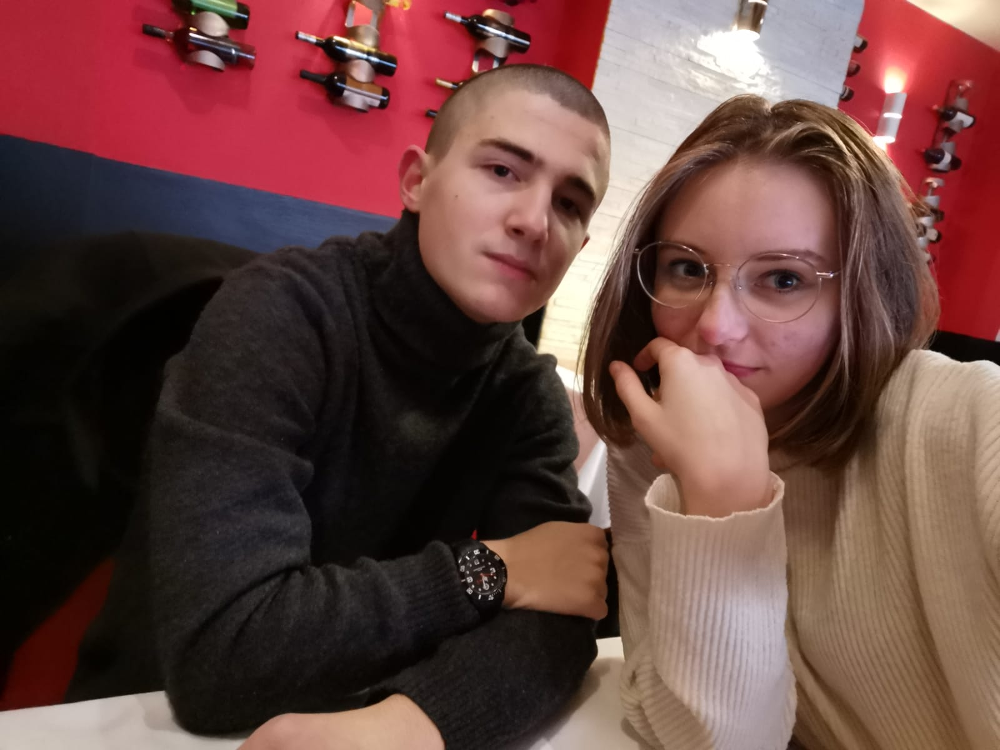
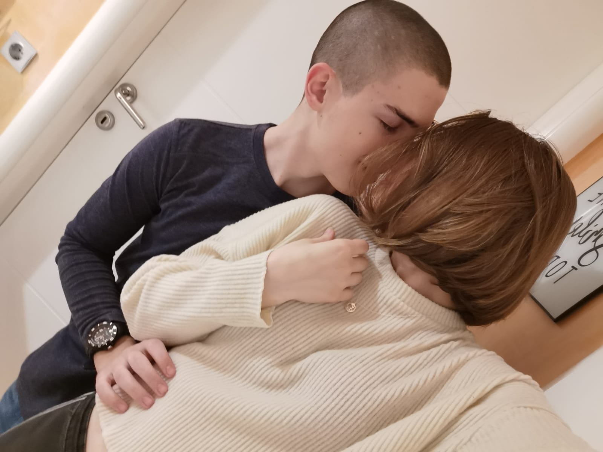

Hi, Reneta, so today is officialy one year after the first time we met each other in real life, and because I couldn't do anything for you in real life now, I decided to make this little web site for us with some memories we've shared together in person, this maybe isn't the best gift you could have gotten but I hope you like it. Enjoy!
I know you don't really like this one, but hey, it is my favourite picture after all so I had to include it because yes, I really like it and it has sentimental value to me.
This is also a really dear picture to me because it was our first lunch together at a restaraunt, and a balkan one while we're at it, also because we kissed after eating onion so that makes it really nice HAHAHAH.
Well now then, there isn't too much left to add, but to end this picture show with the best picture of us together, in my opinion, and because it is the first thing I want to do with you when I see you again;
That's all of the pictures I wanted to show off in this little thing I made for you, now there's a couple of things I'd like to say before I end this; Reneta, you've made the past year and more one of the best times of my life, I have never imagined I'd meet someone who I'll grow to love this much, it is just... I don't know, amazing, perfect, beautiful? There is just so many words I can use to express myself, but I just can't decide. Thank you for being by my side for so long, I can't even tell you how much I miss you and how much more time I want to spend with you. You're the best part of my life, and I'm so lucky to have you in my life. I wouldn't want anyone else but you by my side, not now, not in the future. You made my life amazing, and I'm really thankful and happy about it. Thank you for being the reason why I wake up happy in the morning, thank you for being someone I can wish a good night to, tell them I love you, tell them everything that is on my mind, thank you for being who you are. I love you, I love you so so much.